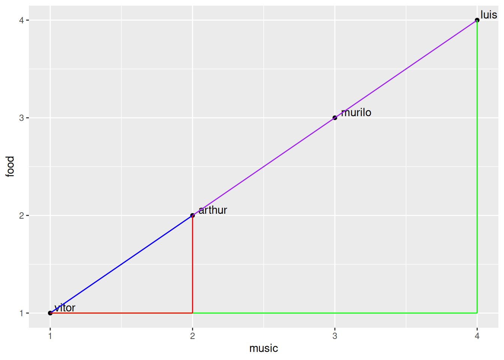
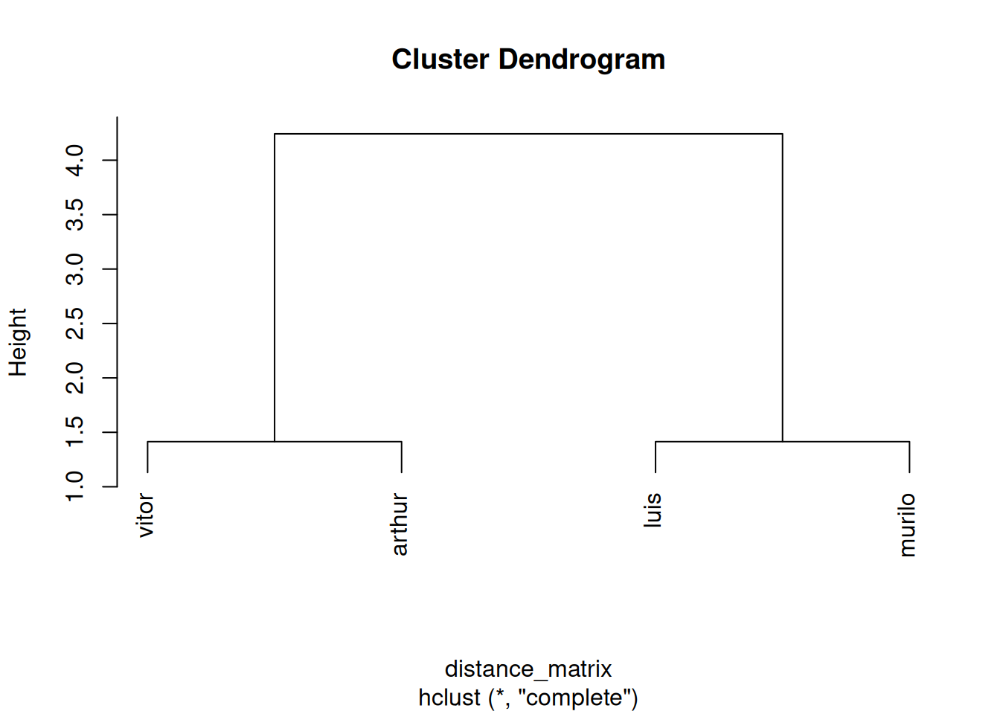
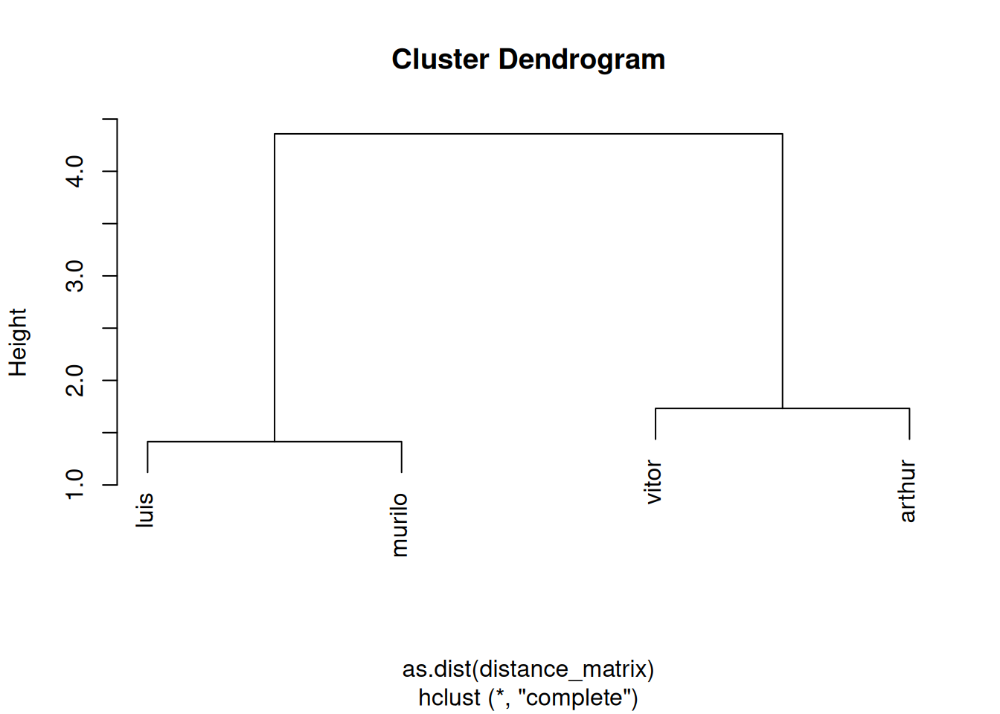

student music sports food
1 vitor melodic metal tennis soap
2 luis vaneira football churrasco
3 arthur rock table tennis beans
4 murilo pagode football strogonoff
One thing I always tell my students is that nearly everything in the world can be quantified — as long as we’re okay with the consequences of doing so. For example, let’s now transform these categorical variables into numeric ones. To do this, we need to establish a rule. Since we want to measure how different my students’ preferences are, I’ll arbitrarily define ordered sets for each category, placing the most contrasting items at opposite ends. For music, I’d say the set is: {melodic metal, rock, pagode, vaneira}. This could be interpreted as a kind of ‘Brazilian-countryness’ scale, for instance — but the key idea is that ‘melodic metal’ is more similar (and thus closer on the scale) to ‘rock’ than to ‘vaneira’. For sports, the set is: {football, tennis, table tennis}. For food, the set is: {soap, beans, strogonoff, churrasco}. Guessing the scale I had in mind for the last two sets is left as an exercise for the reader (always wanted to say that). Food is the trickiest one — but I think we can all agree that soup is very different from roast beef… or at least I hope so. Also, Vitor eating soap is a inside joke of them. Don’t ask me. I’m afraid to know. Sets defined and ordered, let’s replace the categorical values for numerical ones, in our case, it will be simply the position in the set, what is highly questionable. To do this, I will use dplyr::case_when, what is an overkill, but I want to showoff my skills.
library(dplyr)
Attaching package: 'dplyr'
The following objects are masked from 'package:stats':
filter, lag
The following objects are masked from 'package:base':
intersect, setdiff, setequal, union
Nice! Now we begin our task. Firstly, the one-dimensional distance between each student for each subject is simply the numerical difference; i.e, \(d = |x_2 - x_1|\), being \(d\) the distance, and \(x_1\) and \(x_2\) two points (students) in that dimension. Now, for two-dimensional distances, things start to get interesting. Let’s plot the points with music and food as axis:
Well, pretty organized. I like it. In our task, the knowledge popularized by a fellow mathematician more than 2,500 years ago will come in very handy. Of course, I’m talking about Pythagoras and the Pythagorean theorem. The idea is that I can draw right triangles using each pair of points (students). For example, I can choose Vitor and Arthur, or Vitor and Luis:
ggplot(data = df) +geom_point(aes(x = music, y = food)) +geom_text(aes(x = music, y = food, label = student), hjust =-0.2, vjust =-0.2, check_overlap =TRUE) +annotate("segment", x =1, xend =4, y =1, yend =4, color ="purple") +annotate("segment", x =1, xend =4, y =1, yend =1, color ="green") +annotate("segment", x =4, xend =4, y =1, yend =4, color ="green")+annotate("segment", x =1, xend =2, y =1, yend =2, color ="blue") +annotate("segment", x =1, xend =2, y =1, yend =1, color ="red") +annotate("segment", x =2, xend =2, y =1, yend =2, color ="red")

And you see now that the distance between each point is the hypotenuse of that right triangle, and the catheti are the one-dimensional distances we mentioned earlier. That’s awesome, because humanity has known for at least 4,000 years now that the sum of the squares of the catheti equals the square of the hypotenuse; i.e., \(h²=a²+b²\), being \(h\) the hypotenuse and \(a\) and \(b\) the catheti. Since the hypotenuse represents the distance—known as the Euclidean distance, named after Euclid, the father of geometry—we can work with it this way:
So, knowing that, we can create a function to calculate it for us:
distance <-function(x1,y1,x2,y2) { a <- x2-x1 b <- y2-y1 d =sqrt((a^2)+(b^2))return(d)}
To make sure that it’s working, let’s test it with the classical example: if one cathetus equals 3 and the other equals 4, the hypotenuse should equal 5:
distance(0,0,3,4)
[1] 5
There we go. Now we can calculate the distance between each possible pair of students. This type of information is better represented by a matrix; in our case, a 4x4 matrix:
vitor luis arthur
luis 4.242641
arthur 1.414214 2.828427
murilo 2.828427 1.414214 1.414214
Better. Now let’s perform a hierarchical clustering, which means we’ll see which students are closer to each other and create groups based on that.
This process is way too complex to implement from scratch here, like we did with the Euclidean distance, so we’ll use the classic stats::hclust() function instead:
hc <-hclust(distance_matrix)plot(hc)

Preeety cool. But two-dimensional things are kinda lame. The real deal is n-dimensional.
However, for the sake of human-possible visualizations, we’ll expand our idea to just three dimensions, using all subjects.
Let’s visualize the points in a 3D plot:
library(plotly)
Attaching package: 'plotly'
The following object is masked from 'package:ggplot2':
last_plot
The following object is masked from 'package:stats':
filter
The following object is masked from 'package:graphics':
layout
plot_ly(df, x =~music, y =~food, z =~sports,type ='scatter3d', mode ='text+markers',text =~student, marker =list(size =5))
The group structure seems to be the same, even in 3D. To test this, we would need to calculate the euclidean distance on this three-dimensional space for each pair of points. Turns out that the pythagorean theorem is so neat that it works with any number of dimensions. The reader can easily verify this with basic geometry, and will find the equation \[
d=\sqrt{(x_2-x_1)²+(y_2-y_1)²+(z_2-z_1)²}
\] in which \(d\) is the euclidean distance, \(x\), \(y\) and \(z\) are the values for the two points in each dimension. Now, let’s modify our function to adapt it to three dimensions:
distance <-function(x1,y1,x2,y2,z1,z2) { a <- x2-x1 b <- y2-y1 c <- z2-z1 d =sqrt((a^2)+(b^2)+(c^2))return(d)}
vitor luis arthur murilo
vitor 0.000000 4.358899 1.732051 3.000000
luis 4.358899 0.000000 3.464102 1.414214
arthur 1.732051 3.464102 0.000000 2.449490
murilo 3.000000 1.414214 2.449490 0.000000
And perform a hierarchical clustering again:
hc <-hclust(as.dist(distance_matrix))plot(hc)

… well, same results. The groups are well defined. Maybe with more dimensions, the groups would start to get more mixed.
And that’s it. Sometimes, basic geometry and a bit of “magic” can solve problems without the need for complex approaches.
Of course, this example is far too simple to be applied at a large scale. There are other techniques, like DBSCAN, Spectral Clustering, and Self-Organizing Maps, that are better suited for more complex problems or different types of data.
But it’s unquestionable that our fellow ancient mathematicians, who discovered the relation we now call the Pythagorean theorem, also planted a seed — a seed that grew to become one of the foundations of modern mathematics and its offspring, like machine learning and statistics.
So next time someone tells you that math is boring or useless, you can tell them that even grouping people by their favorite food can be done using triangles.
Geometry isn’t just about shapes on paper — it’s about understanding the world in ways you never imagined.
And hey, if a 2500-year-old idea can still help us make sense of today’s data, maybe math is kind of magical after all, right?